AOS Lecture Notes - Lesson 6 - Distributed Objects and Middleware
Distributed Objects and Middleware
- How should we design for the continuous and incremental evolution of complex distributed software systems, both in terms of functionality and performance?
Spring Operating System
- Later marketed as Solaris OS by Sun Microsystems
- How best to innovate OS?
- Brand new OS? Or better implementation of known OS?
- Usually constrained by marketplace needs
- Large complex server software
- There are probably legacy programs already running on your existing OS that you really would like to keep
- So take the “intel inside” approach…. in this case “unix inside” for box makers like Sun
Object-Based vs Procedural Design
- Procedural
- 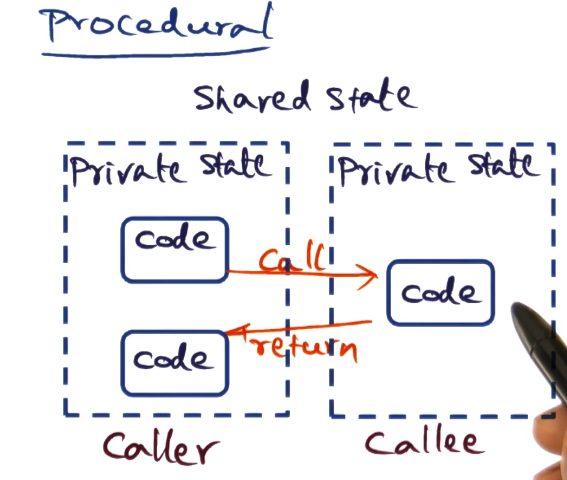
- Shared state (often global)
- code written as one monolithic entity
- Objects
- 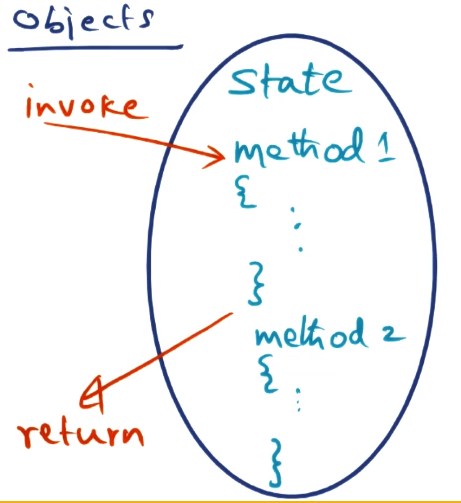
- Objects contain state, not visible outside
- Methods inside object that manipulate the state that is part of the object. Only these methods are exposed to the outside world
- The above are well understood for writing code. Spring applied them to the OS itself. So did Tornado, covered earlier in the class
Spring Approach
- 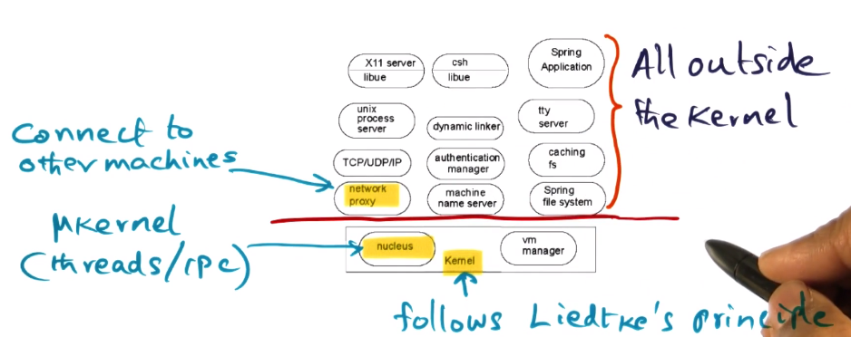
- Spring was Sun’s answer to building a network operating system, using the Unix interface. Its design reflects that
- Strong interfaces for each subsystem
- Open, flexible, and exentisble
- Allows multiple languages to be used for system components
- Used IDL (interface definition language) to facilitate this
- This borrows a lot from microkernel design philosophies
- Nucleus == the “microkernel” of Spring
- 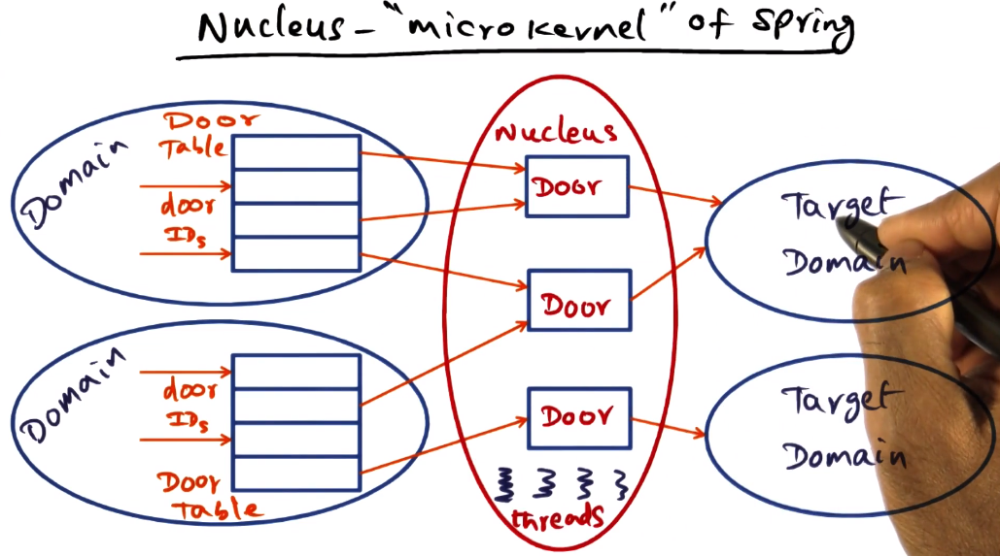
- Abstractions are:
- Domain (similar to a UNIX process)
- threads execute in a particular domain. threads are similar to e.g. pthread
- Door is a software capability to a domain (opening a door to get into a room == entering target domain)
* Doors function via handles, can interact with e.g. fopen()
- Spring kernel is the combination of the nucleus plus the memory management for handling the domain and door objects
- This structure allows for very performant cross-domain protected procedure calls
Object invocation across the network
- 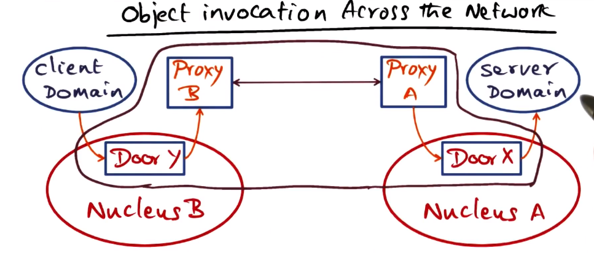
- Proxy A: Export net handle embedding Door X to Proxy B
- Proxy B: establishes Door Y locally so client can communicate with it.
- Proxy B: use net handle to connect nuclei
- When client accesses Door Y it thinks it is accessing server domain, it has no knowledge of any underlying mechanisms intervening
- Likewise the Server interacting with door X thinks it’s being talked to directly by the client
- Doors are confined to the nucleus on a single node
- Object invocation is therefore extended using network proxies
- Proxies can potentially employ different protocols for different connections (e.g. LAN vs WAN nodes)
- Proxies are invisible to the client and servers. They are unaware whether they are on same or different machines, and don’t care.
Secure Object Invocation
- 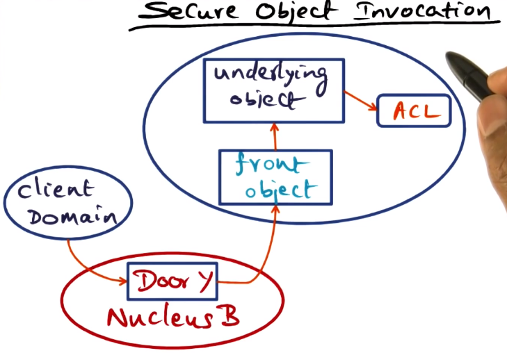
- May be necessary for a server object to provide different privilege levels to different clients
- Security provided via a “front object” that is outside the Spring semantics for object invokation.
- The connection between front object and underlying object is entirely in the purview of the creator of the service object. Not part of Spring door mechanism
- Underlying object checks access control list, and passes appropriate methods or data back to front object. ACL checked before the invokation is allowed to proceed at all
- Can use one-time references to limit access by preventing re-use of privileged access handles
Virtual Memory Management in Spring
- 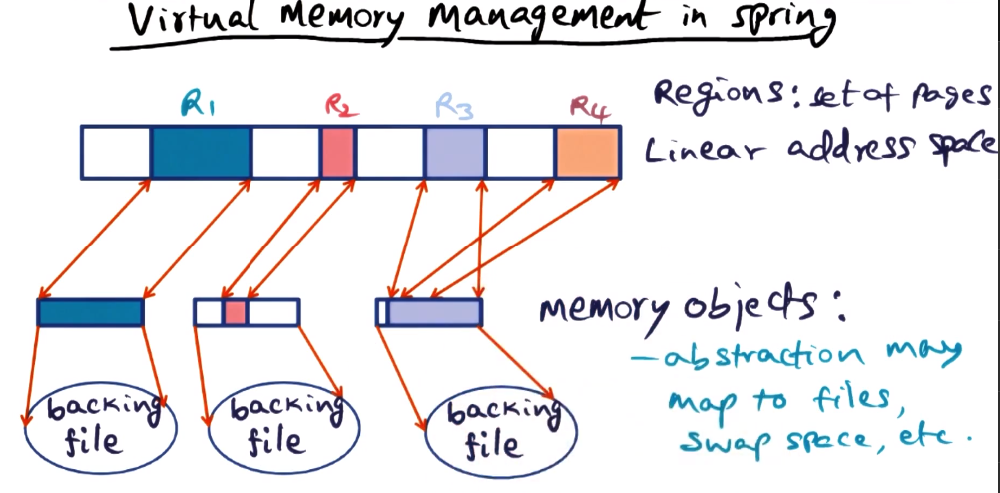
- Memory management is part of the kernel in Spring
- There is a per-machine virtual memory manager
- VMM breaks the linear address space into regions
- Memory Objects
- Regions are mapped to different memory objects
- Different regions of the address space can also be mapped to the same region
- Abstraction of a “region” may map to files, swap spaces, etc
- Memory Object Specific Paging
- 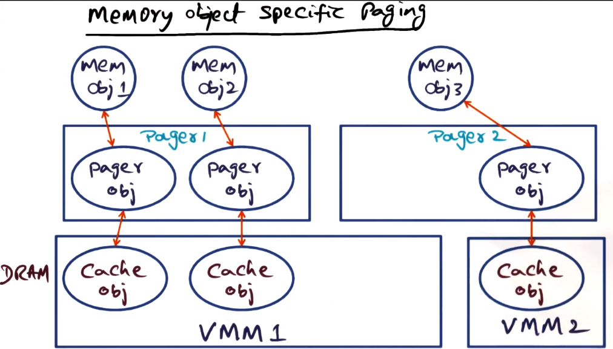
- object must be brought into DRAM
- pager object does this
- makes or establishes relationship between virtual and physical memory
- pager object creates a cache object in the DRAM
- There can be multiple managers, memory objects, pager objects, etc. Only one DRAM though
Spring System Summary
- Oboject-oriented kernel
- nucleus -> threads and IPC
- microkernel -> nucleus and address space
- doors and door tables -> basis for cross domain calls
- object invocation and cross machine calls
- Virtual memory management
- address space object, memory object, external pagers, cache objects
Dynamic Client-Server Relationship on Spring
- Client and server can be on the same or different machines, without change to implementation
- This is done using “subcontracts”
- 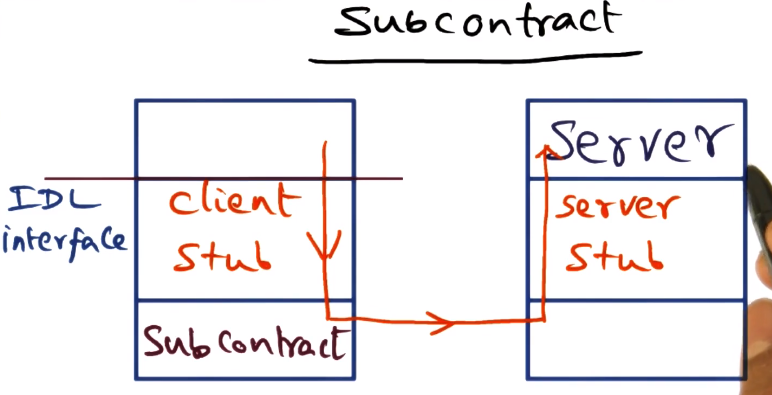
- The subcontract is the interface provided for realizing the IDL contract between the client and server
- Hides the runtime behavior of the object from the actual interface
- Client side stub generation is thus simplified, with the specific subcontract used responsible for the details
- Subcontract can be changed at any time as needed
- Subcontract interface for stubs
- 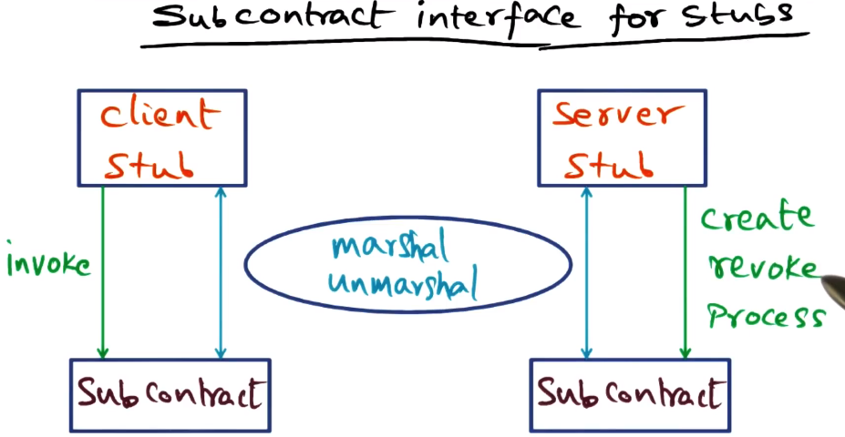
- First interface is for marshaling/unmarshaling
- all details such as server location are buried in the subcontract
- client stub just calls subcontract
- Client and server stubs are thus the same for all instances of client and server. Only subcontracts differ.
- This does seem to me like just shuffling the complexity around. Presumably does actually reduce overall complexity required, though.
Java RMI
Java History
- Inveted by James Gosling at Sun
- Originally called Oak, later Java
- Originally intended for use with PDAs, then for set-top boxes, and then onto the Internet for e-commerce
Java Distributed Object Model
- Remote Object
- Accessible from different address spaces
- Remote Interface
- Declarations for methods in a remote object
- Failure Semantics
- Clients deal with RMI exceptions
- Similarities/differences to local objects
- Similarity: object references can be passed as parameters
- Difference: parameters only passed as value/result in the distributed object model
Implementation in Java of Distributed Object Model
Bank Example 1 - Reuse a local implementation
- 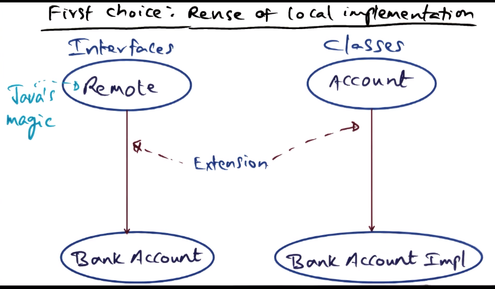
- The remote publication of the interface is easy, using Java’s magic “remote” interface. The heavy lifting here is all done by the implementation of the bank account. Must find a way to make the location of the service visible by the clients on the network.
Bank Example 2 - Reuse of “Remote” (better approach)
- 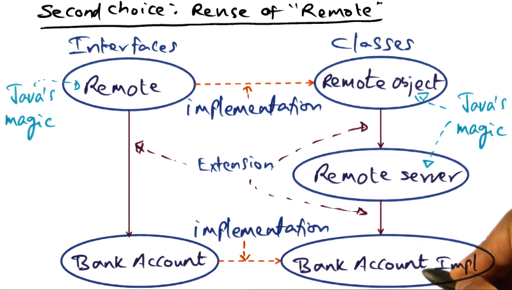
- As before, publish methods to network using Remote interface
- When you instantiate the implementation object, it becomes instantly visible because we inherit from the remote object classes. Heavy lifting is done by the Java runtime with this approach.
- This is not overly clear, even in the video. Review the GIOS notes for more detail.
- Server Side
- Client Side
- 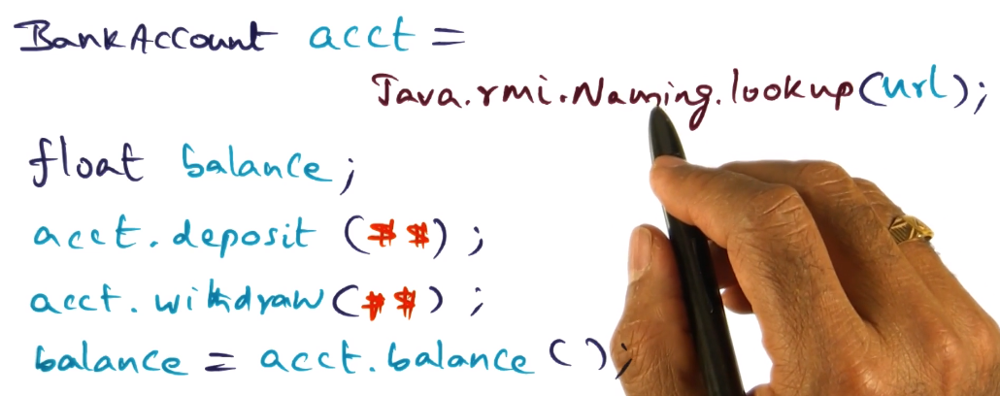
- This has one big problem: if the invokation fails, it is not always possible to tell where in the process it failed. This is a common problem in networked applications
RMI Implementation - RRL
- 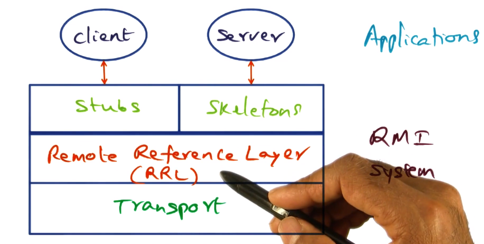
- Remote Reference Layer (RRL)
- Where the magic happens. All the marshaling/unmarshaling of arguments done here.
- RRL functions similarly to a subcontract. All the complexity and detail hidden there, tucked away from the clients and servers.
RMI Implementation - Transport
- 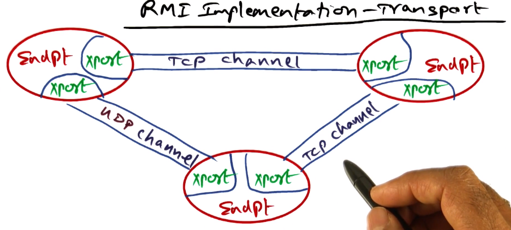
- Endpoint
- Protection domain (or a JVM)
- Has a table of remote objects it can access
- Connection Management
- Responsible for setup, teardown, listen
- Responsible for locating correct dispatcher that can handle a given invokation
- Liveness monitoring
- Coice of transport mechanism
- e.g. UDP vs TCP
- Decided by RRL, communicated to connection manager
Enterprise Java Beans
- How do we structure the system software for a large-scale distributed system service?
- Java Bean == reusable software component
- N-tier applications
- 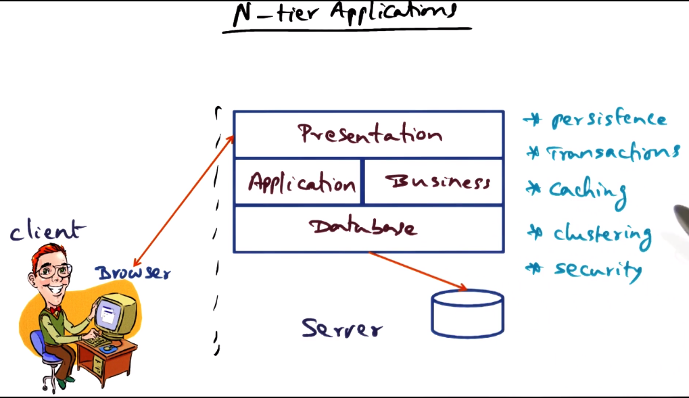
- application comprised of a stack of layers that each perform separate responsibilities
- Can reuse components for each layer of the stack, as at each layer there are many similarities across applications and across requests for any given application
- Reduce network communication (latency), security risks, increase concurrency for handling an individual request.
- Many such applications are embarassingly parallel, can leverage this for performance
- Example framework
- There are four containers (roughly equivalent to protection domains)
- Client container
- Applet container
- resides on web server
- interacts with the browser
- Web container
- contains presentation logic (e.g. web pages)
- EJB container
- contains business logic
- Talks to DB server as needed
- Beans – a unit of reuse
- Example – the shopping cart function
- Containers above host the beans
- 3 types of beans
- Entity
- e.g. a row in a database
- usually persistent objects with primary keys
- persistence may be built into the bean itself or built into the container into which the entity bean is instantiated
- Session
- Associated with a particular client and session (temporal window over which a client is interacting with the service)
- Can be a stateful session bean or a stateless session bean
- Message
- Useful for asynchronous behavior
- example: stock ticker, RSS feed
- Can be more or less granular, which affects reusability
- finer grained is better for reusability, but requires more complex business logic
- 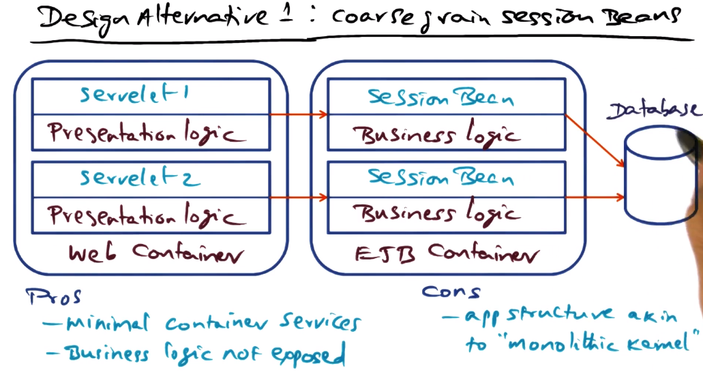
- Does not allow appropriate concurrency for this use case
- 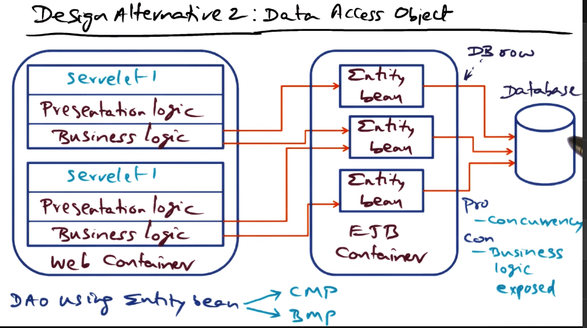
- Entity bean may be responsible for one row of the DB, or a set of rows. Up to the designer.
- CMP == container-managed persistence
- BMP == bean-managed persistence
- 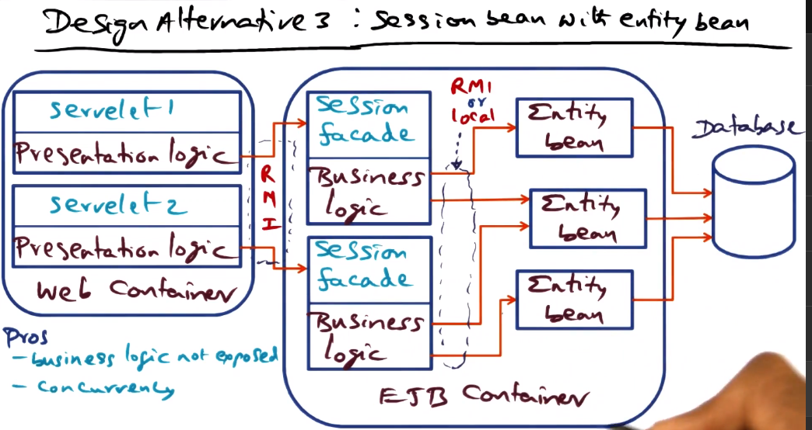
- Associate a session facade with each client session. This allows you to construct a session and associate it with a particular client
- Using RMI allows entity bean to be placed wherever we want in network. Using local requires colocation with business logic and session facade, but avoids network communication and so improves performance.